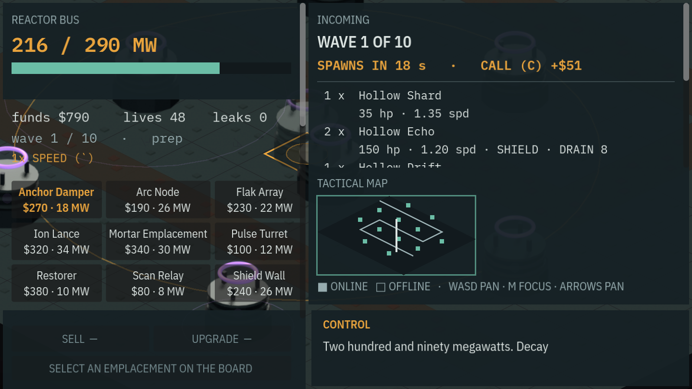
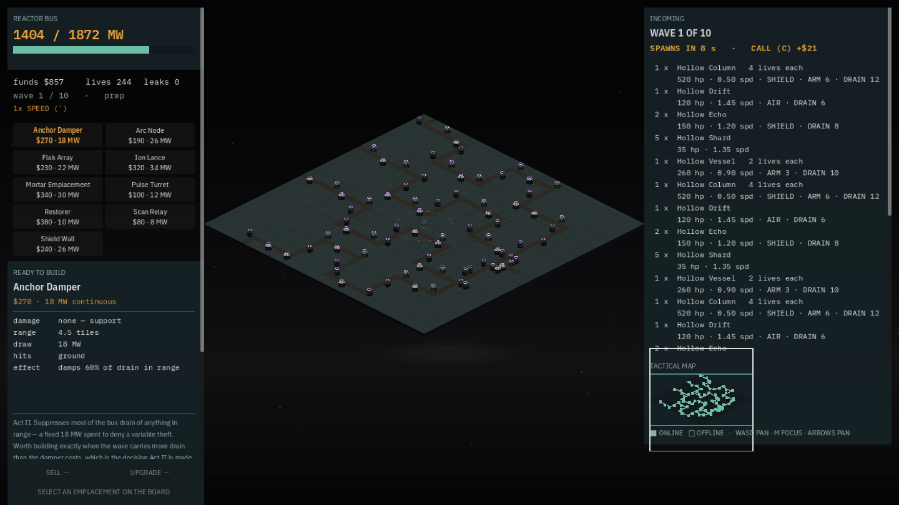
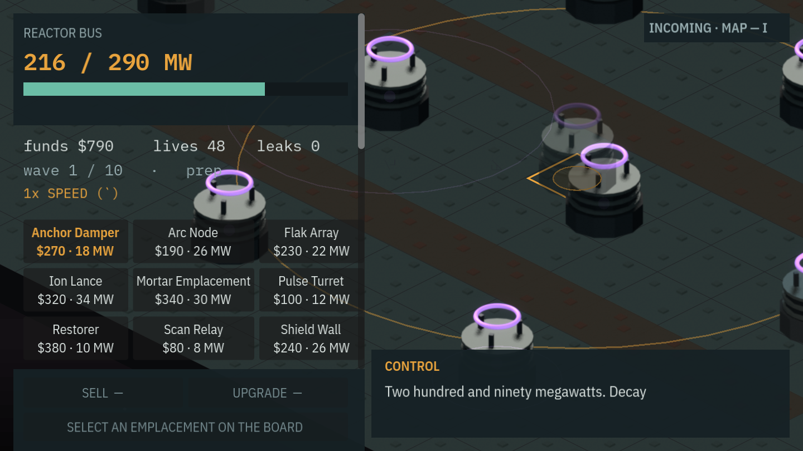
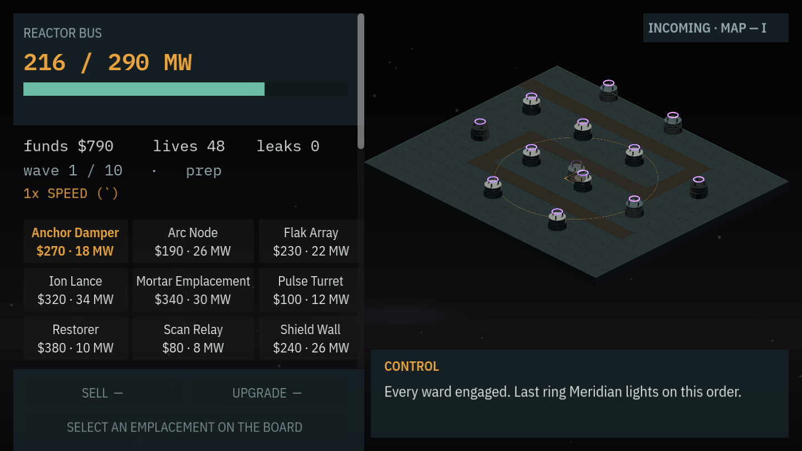
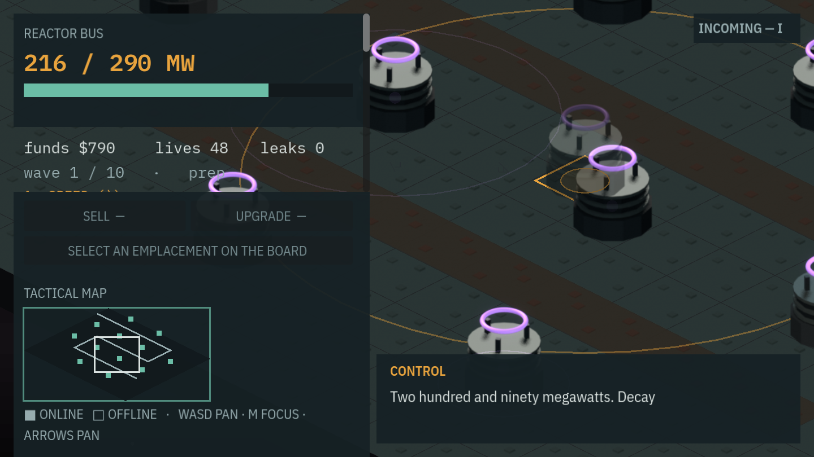

At 200% interface scale the playfield was 4 px wide, and every accessibility check passed
LF-247, decisions 084 and 085. The two instrument panels are 948 px that do not shrink when the interface scale shrinks the logical viewport, so the board was drawn into a strip 4 px wide at 200% — completely covered, on every anchor. accessibility reported 192 text items clean throughout, and scenario a11y-worst, which runs at exactly that scale on exactly that anchor because it is the worst case, passed. A derived bound, an undocking threat panel and a 9 ms tier-1 check close it. Decision 084 is the other half: it corrects a number inside an owner-taken decision and finds the decision's answer survives anyway.
Third entry of this session, and the three share a theme worth naming rather than leaving for a reader to notice. the-grade-table-said-nothing derived emplacement range from lane length and then found the grade table could not see what the change cost — all 24 anchors still graded ok while the top difficulty's bite was halved. never-pressed-the-sell-button found that the parity check had run the whole game 1,440 times per invocation and never once pressed the sell button. This one found a board 4 px wide behind an accessibility audit reporting 192 text items clean. Three times in one session, the instrument was the thing that was wrong.
The defect
The strip the board is drawn into is vp.x − 2·gutter − COL_W − THREAT_W. COL_W is 420 and THREAT_W is 528 — 948 px of instrument panel that does not shrink when the interface scale shrinks the logical viewport. The viewport does: 200% means a 960×540 logical design space. On every anchor:
| scale | logical viewport | playfield | % of width |
|---|---|---|---|
| 100% | 1920×1080 | 940 px | 49.0% |
| 125% | 1536×864 | 556 px | 36.2% |
| 150% | 1280×720 | 300 px | 23.4% |
| 175% | 1097×617 | 117 px | 10.7% |
| 200% | 960×540 | 4 px | 0.4% |
The 4 px is not the plain subtraction — that goes negative. Ui.gutter() is itself derived from whatever is left over and clamps at 4 px a side, so the arithmetic bottoms out instead of crashing, and what it bottoms out at is a board four pixels across. The two panels cover it completely; it is drawn behind them. A zoom-to-fit at that width clamps to ZOOM_MIN_FLOOR and shows nothing at all. 200% is an offered, shipped setting on which the game cannot be played.

Why nothing caught it, which is the part worth keeping
Decision 050 measured these panels' vertical fit exhaustively and made both scroll, with their controls pinned outside the scroll region. That work is correct and it stays. It is also about text — WCAG SC 1.4.4 and 1.4.10, content not lost at 200%. tools/validate/a11y.py audits text items, and a playfield is not a text item. So accessibility reported 192 items clean, and scenario a11y-worst — which runs at ui_scale: 2.0 on anchor-24 precisely because that is the worst case decision 048 identified — asserted that the inspector showed the emplacement it had just selected, took its frame and its text inventory, and passed over a 4 px board.
Sharper: the measurement already existed. scripts/display_settings.gd recorded that at 200% interface scale the strip is 4 px wide on anchor-24 and that the two panels eat nearly all of a 960 px design space — and used it to justify one thing, defaulting edge-scroll off, because a 48 px edge-scroll margin does not fit inside a 4 px strip. The number was right, it was written down, it was read, and the consequence was never drawn. A number written into a comment is not a number anything checks. That comment now says so about itself, at the same call site.
How it was found: by taking a frame decision 073 said to take
Not by auditing the interface. By generating the first 48×48 theatre-scale board with tools/genboard.py and looking at it in the engine — the thing docs/STATE.md and the previous entry both noted had never actually been done, because no shipped anchor is that size (anchor-24, the biggest, is 18×15). Two separate findings fell out of that one capture: the camera could not fit the board, and at 200% there was no board on screen at all.

LF-247 and LF-248. 2,304 tiles against the 270 of a shipped anchor. Decision 073 chose this size in the abstract; this is the first time anyone looked at one.The fix
Ui.PLAYFIELD_MIN_W := COL_W — the board is at least as important as the narrowest instrument panel this project already treats as usable. Derived rather than picked: COL_W was solved against the 16 px type ladder (decisions 045 and 046) and is the smallest width anything in this interface is permitted to be, so a board given less than that is being told it matters less than the readout beside it. Around it, threat_docked(), reserved_w() and strip_w(), so the rule lives in exactly one place and is read by both anchor_view.gd's _strip_geometry() and hud.gd — the two of them have to make the same call about where the panel goes, and two copies of that is one too many.
Above the width at which docking both panels would breach the bound, the threat panel stops reserving strip width and becomes an overlay toggled on lf_threat_toggle. The threshold is derived from the widths themselves and never written as a scale number — it lands near 137% today, and writing 1.37 into the source would be a constant that stops being true the moment either panel width moves. The binding was generated through tools/godot/setup_input.gd per decision 042, not hand-edited into project.godot's [input] block.
| scale | strip before | strip after | zoom-to-fit before | after |
|---|---|---|---|---|
| 150% | 300 px | 828 px | 0.1420 | 0.3920 |
| 175% | 117 px | 645 px | 0.0554 | 0.3055 |
| 200% | 4 px | 508 px | clamped to 0.05, board invisible | 0.2405, whole board framed |

INCOMING · MAP — I naming the key that brings them back. Without it a player at 150% and above has no way to discover the tactical map still exists.
ZOOM_MIN_FLOOR and drew nothing.The claim worth making about those numbers is not that they look right — it is that the running game and the gate's arithmetic produce the same number rather than two plausible ones. scenario a11y-worst was re-run for this entry against 74f1f7c rather than quoted from the commit:
frame assertion got
3 hud.selected == "pulse-turret" pulse-turret pass
3 hud.threat_docked == false false pass
3 hud.threat_open == false false pass
3 view.strip.w >= 420 508.0 pass
3 view.strip.zoom_min > 0.05 0.240530303 pass
7 hud.threat_open == true true pass
7 view.strip.w >= 420 508.0 pass
10 hud.threat_open == false false pass
SCENARIO pass=true anchor-24 ui_scale 2.0 300 frames.venv/bin/python tools/scenario.py data/scenarios/a11y-worst.json, re-run at 74f1f7c for this entry — one headless, windowless Godot. Frames 5 and 8 press lf_threat_toggle through Input.parse_input_event() and the assertions land on the frame after, because the press queues (LF-139). The strip is 508 px both while the overlay is shut and while it is open, so the overlay does not take the width back is part of the same run. And zoom_min came back at 0.240530303 against a board that projects to 2112 px wide: 508 / 2112 is 0.240530303 exactly.A measured refusal, and it went against the ticket
LF-247 proposed two ways to keep the minimap on screen when the threat panel undocks. Both were built, measured, and rejected, and the minimap travels with the overlay instead.
- A minimap-only sliver kept docked on the right.
MINIMAP_MAP_Wplus padding is 244 px, which leaves the board at 264 px at 200% — it breachesPLAYFIELD_MIN_Won its own, so it does not solve the bug it exists to work around. - Relocating the minimap into the instrument column. It fits horizontally — a 508 px strip against a 420 px column, no overlap — and it looked right in a capture. It costs 203 px of a 540 px viewport: the column's scroll budget drops from 426 px to 223 px and the nine-button build bar, whose content ends at y=383, goes below the fold. That trades nine controls for one readout, which inverts decision 050's own rule that controls are pinned and readouts scroll.

What CAM-04's risk note objected to was the minimap scrolling away unbidden — something the player did not ask for, cannot see happen and cannot undo except by hunting for a scrollbar. A deliberate toggle with a permanent on-screen affordance is a different thing, and it is exactly the status the threat readout beside it now has. The two are read together anyway: what is coming, and where it is.
The new check, and the four ways it was proved red
playfield width — tier 1, 9 ms, text-only, no Godot and no frame. It parses the constants out of scripts/ui_theme.gd, the scale ladder out of scripts/display_settings.gd and the base viewport out of project.godot, then evaluates the bound at every offered scale. The interesting part is STRIP_FORMULA, which pins the four geometry expressions verbatim against the GDScript: rewrite strip_w() and the check fails by name rather than quietly continuing to evaluate a formula the game no longer uses. That is what makes a text-only mirror safe to trust — it can only go stale loudly.
It was proved red four separate ways before it was trusted: against the pre-fix tree, against a rewritten strip_w(), against a 250% scale added to the ladder, and against COL_W raised to 480. The tier-1 docstring counts moved 17/26/40/43 to 18/27/41/44 and tier counts stayed green.
[ ok ] playfield width 9ms playfield >= 420px at all 6 scales:
1x 940px, 1.1x 765px, 1.25x 556px, 1.5x 828px (undocked),
1.75x 645px (undocked), 2x 508px (undocked)
tier 1 — 18 passed · 0 failed · 26 skipped · 7105msDisplay.UI_SCALES also offers 110%, where the strip was already 765 px and the panel stays docked. The check reads the ladder out of display_settings.gd rather than carrying its own copy, so a scale added to the options screen is a scale it covers on the next run.Decision 084: a correction inside an owner-taken decision, whose answer survives it
The same measurement that found the shipped defect found a wrong number in decision 073, which chose the 48² board target. Part of 073's case was a zoom-to-fit row that divided by the full viewport instead of this strip: it tabulates 0.312 at 100% and 0.156 at 200%, which are 1920/6144 and 960/6144. The real capture comes back at 0.1530, which is 940/6144 exactly — 2.04× out at 100%, and 223× out at 200%, where the real strip was 4 px and the real fit was 0.0007.
That is not pedantry, because that row is where the table's sprite on screen figures came from, and sprite legibility is the row that rejected 64² — 073 says 64² draws a sprite at 30–60 px, below the threshold at which one enemy type can be told from another. Corrected against the real strip at 100% interface scale, sprite width is 256 × zoom:
| board | measured zoom-to-fit | sprite px |
|---|---|---|
| 32² | 0.2295 | 59 |
| 48² | 0.1530 | 39 |
| 64² | 0.1147 | 29 |
Every candidate now falls inside or below the band 64² was rejected for — including the 32² option 073 called the only size that needs no concession at all. A row that rejects all three selects nothing.
So the resolution is to strike the row, not redo the arithmetic. Zoom-to-fit is the wrong reference for legibility, and decision 073 supplies the reason itself: it concluded that at 48² the board is never fully visible in the playfield and that the minimap does the wide read. Nobody plays at the zoom floor. Legibility belongs at playing zoom, where a sprite is 256 px at zoom 1.0 on a board of any size and board dimension does not enter it. The board size stays 48². 073's answer survives its own broken premise, because the discriminator was never valid for any candidate — and that is worth saying out loud rather than quietly banking. The live reasons to prefer 48² over 64² are the ones 073 lists elsewhere and which do not touch this row: Iso.TILE_W cannot grow, decision 066 refused a larger atlas cell on a measured VRAM projection, and 64² would commit the project to silhouette-first art.
Treat 32² and 48² as arithmetic on a measurement, not as measurements — if either becomes load-bearing for a further decision, take the frame directly.decision 073, asking for exactly this
One number in the record needs correcting, and this is where that happens
The commit message above states that scenario a11y-worst now runs 8 assertions (was 3). Eight is right — the re-run above lists them. Three is not: the scenario file as it stood at 1e59d71, immediately before this change, carries exactly one assertion, hud.selected == "pulse-turret". Nothing about the finding moves, and it moves the wrong way for comfort: the worst-case accessibility scenario, at the worst scale on the worst anchor, asserted precisely one thing about the screen, and that one thing was which emplacement was selected in the inspector. It is written down here because the commit is not editable and neither is this journal.
Not done, deliberately
At 200% the undocked overlay's left edge covers the instrument column's rightmost 20 px — its padding and its scrollbar gutter, no text. The alternative was pushing it clear and losing 12 px of the threat panel's own scrollbar off the right edge of the screen: a covered scrollbar on a panel the player is not reading beats an unreachable one on the panel they are. It is documented at the call site in hud.gd and, as far as this entry could find, nowhere else — there is no backlog item behind it, so the call-site note and this paragraph are the whole record.
The gate
Tier 3: 41 passed, 0 failed, 3 skipped (the three tier-4-only checks), 340,433 ms. accessibility 192 items clean, worst contrast 5.08:1 — the audit that missed this is still green, and still correct about the thing it measures. reap.py clean. No .godot rebuild and no import, so nothing was pulled out from under a running session. Re-run for this entry at 74f1f7c: tier 1 green in 7,105 ms with playfield width at 9 ms, scenario a11y-worst green on all eight assertions, and reap.py clean afterwards.
The through-line of all three of this session's entries is one sentence and it is not about any of the three bugs. A check that runs the whole game proves nothing about a quantity nothing in it ever asserts on. The grade table ran every anchor and asserted ok. The parity check ran 1,440 games and asserted the two engines agreed on what it happened to drive. The accessibility audit ran the worst screen in the game and asserted on text. All three were green, all three were honest, and none of them was looking at the thing that was wrong.
Commits
74f1f7cfix(ui): the playfield was 4 px wide at 200% and every accessibility check passed